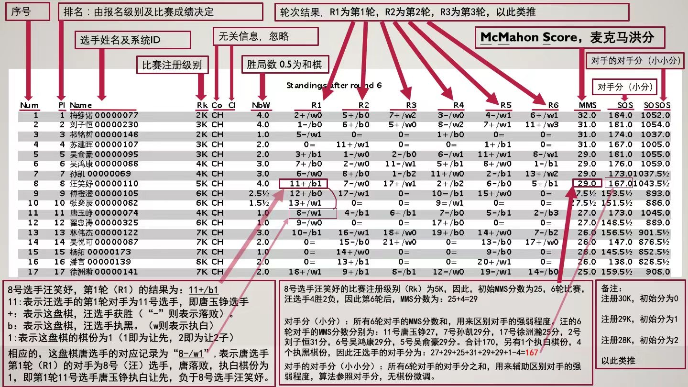

全球围棋超级联赛（第2期进行中）
| 序号 |
排名 |
ID&姓名 |
标准级别 |
国家 |
地区 |
胜局数 |
第1轮 |
第2轮 |
第3轮 |
第4轮 |
MMS |
SOS |
SOSOS |
| 1 | 1 | 0055 金融 | 5D | 中国 | 辽宁沈阳 | 2 | 3+/w0 | 2-/w1 | 5+/w1 | 4?/w1 | 36 | 144 | 563 |
| 2 | 2 | 0034 顾思维 | 4D | 中国 | 上海闵行 | 3 | 4+/b0 | 1+/b1 | 3+/w0 | 6?/w1 | 36 | 141 | 564 |
| 3 | 3 | 0082 刘宜盎 | 5D | 中国 | 河南郑州 | 1 | 1-/b0 | 5+/w0 | 2-/b0 | 7-/w1 | 35 | 143 | 559 |
| 4 | 4 | 0092 徐定平 | 4D | 中国 | 湖北潜江 | 2 | 2-/w0 | 7+/b0 | 11+/b0 | 1?/b1 | 35 | 140 | 556 |
| 5 | 5 | 0083 李彧洋 | 4D | 中国 | 广东广州 | 2 | 6+/w0 | 3-/b0 | 1-/b1 | 13+/w1 | 35 | 139 | 561 |
| 6 | 6 | 0090 李凯辉 | 4D | 中国 | 湖南岳阳 | 2 | 5-/b0 | 13+/w0 | 10+/w0 | 2?/b1 | 35 | 137 | 555 |
| 7 | 7 | 0135 沈燕斌 | 3D | 中国 | 江西南昌 | 3 | 14+/b0 | 4-/w0 | 22+/w1 | 3+/b1 | 35 | 135 | 549 |
| 8 | 8 | 0129 陈劲松 | 3D | 中国 | 福建宁德 | 3 | 19+/w1 | 10-/b0 | 13+/w0 | 11+/w0 | 35 | 135 | 542 |
| 9 | 9 | 0120 张子裕 | 2D | 中国 | 山西太原 | 4 | 16+/w0 | 15+/b0 | 17+/b0 | 10+/w0 | 35 | 133 | 537 |
| 10 | 10 | 0138 阮永如 | 4D | 中国 | 浙江瑞安 | 1 | 0= | 8+/w0 | 6-/b0 | 9-/b0 | 34 | 138 | 537 |
| 11 | 11 | 0147 高睿远 | 3D | 中国 | 浙江金华 | 2 | 15+/b0 | 14+/w0 | 4-/w0 | 8-/b0 | 34 | 136 | 544 |
| 12 | 12 | 0155 蔡丹骏 | 3D | 中国 | 江苏常州 | 0 | 0= | 0= | 0= | 0= | 34 | 128 | 512 |
| 13 | 13 | 0109 程平 | 3D | 中国 | 上海闵行 | 1 | 18+/w0 | 6-/b0 | 8-/b0 | 5-/b1 | 33 | 137 | 542 |
| 14 | 14 | 0139 杜青莹 | 3D | 中国 | 湖北武汉 | 1 | 7-/w0 | 11-/b0 | 20+/w0 | 17?/w0 | 33 | 135 | 531 |
| 15 | 15 | 0142 黄梓洋 | 3D | 中国 | 黑哈尔滨 | 1 | 11-/w0 | 9-/w0 | 26+/b0 | 16?/b0 | 33 | 134 | 529 |
| 16 | 16 | 0061 王福宁 | 2D | 美国 | 华盛顿州 | 2 | 9-/b0 | 21+/w0 | 32+/b0 | 15?/w0 | 33 | 133 | 519 |
| 17 | 17 | 0084 甄颖进 | 2D | 中国 | 广东广州 | 2 | 34+/w0 | 18+/b0 | 9-/w0 | 14?/b0 | 33 | 132 | 526 |
| 18 | 18 | 0037 安然 | 3D | 中国 | 北京西城 | 1 | 13-/b0 | 17-/w0 | 25+/b0 | 19?/w0 | 33 | 131 | 528 |
| 19 | 19 | 0119 杨颜瑞 | 2D | 中国 | 四川雅安 | 2 | 8-/b1 | 23+/b0 | 28+/w0 | 18?/b0 | 33 | 131 | 521 |
| 20 | 20 | 0071 徐齐辰 | 1D | 中国 | 江苏无锡 | 3 | 35+/w0 | 27+/b0 | 14-/b0 | 24+/b0 | 33 | 128 | 517 |
| 21 | 21 | 0010 张淇浚 | 1D | 中国 | 广东清远 | 3 | 45+/w0 | 16-/b0 | 40+/b0 | 32+/w0 | 33 | 127 | 505 |
| 22 | 22 | 0097 王子杭 | 2D | 中国 | 广东深圳 | 1 | 24-/w1 | 30+/b0 | 7-/b1 | 26?/w0 | 32 | 131 | 516 |
| 23 | 23 | 0026 影月 | 1D | 中国 | 湖南长沙 | 2 | 29+/b0 | 19-/w0 | 35+/b0 | 27?/w0 | 32 | 128 | 511 |
| 24 | | 0070 李森 | 1D | 中国 | 山东东营 | 2 | 22+/b1 | 36-/w1 | 29+/b0 | 20-/w0 | 32 | 128 | 511 |
| 25 | | 0145 林子木 | 1D | 中国 | 辽宁抚顺 | 2 | 31+/w0 | 34+/b0 | 18-/w0 | 28?/b0 | 32 | 128 | 511 |
| 26 | 26 | 0150 曾子芮 | 2D | 中国 | 广东韶关 | 0 | 0= | 0= | 15-/w0 | 22?/b0 | 32 | 127 | 513 |
| 27 | 27 | 0054 王大双 | 1D | 中国 | 上海浦东 | 2 | 36+/b0 | 20-/w0 | 38+/w0 | 23?/b0 | 32 | 127 | 507 |
| 28 | | 0128 廖翊栩 | 1D | 中国 | 浙江永嘉 | 2 | 52+/w0 | 31+/b0 | 19-/b0 | 25?/w0 | 32 | 127 | 507 |
| 29 | 29 | 0127 徐晓东 | 1D | 中国 | 江苏无锡 | 2 | 23-/w0 | 43+/b0 | 24-/w0 | 44+/b0 | 32 | 126 | 503 |
| 30 | 30 | 0069 丁方铄 | 1D | 中国 | 河南濮阳 | 2 | 39+/b0 | 22-/w0 | 46+/b0 | 42?/w1 | 32 | 126 | 501 |
| 31 | 31 | 0134 Simon | 1D | 中国 | 上海浦东 | 2 | 25-/b0 | 28-/w0 | 47+/w0 | 48+/b0 | 32 | 126 | 498 |
| 32 | 32 | 0102 郑莘雨 | 1D | 中国 | 广东广州 | 2 | 70+/b0 | 37+/w0 | 16-/w0 | 21-/b0 | 32 | 125 | 508 |
| 33 | 33 | 0048 小桃子 | 1D | 中国 | 湖南娄底 | 2 | 37-/w0 | 38-/b0 | 51+/w0 | 49+/b0 | 32 | 124 | 492 |
| 34 | 34 | 0057 朱路阳 | 2D | 中国 | 浙江衢州 | 0 | 17-/b0 | 25-/w0 | 37?/b0 | 41?/w0 | 31 | 127 | 510 |
| 35 | 35 | 0123 秦心远 | 1D | 中国 | 北京 | 1 | 20-/b0 | 41+/w0 | 23-/w0 | 38?/b0 | 31 | 127 | 505 |
| 36 | 36 | 0072 朱远友 | 1D | 中国 | 贵州遵义 | 1 | 27-/w0 | 24+/b1 | 39-/w1 | 40?/w0 | 31 | 126 | 503 |
| 37 | 37 | 0012 羽高 | 1D | 中国 | 广东江门 | 1 | 33+/b0 | 32-/b0 | 34?/w0 | 46?/w0 | 31 | 126 | 498 |
| 38 | 38 | 0130 黎盛翔 | 1K | 中国 | 湖北武汉 | 2 | 53+/b0 | 33+/w0 | 27-/b0 | 35?/w0 | 31 | 125 | 499 |
| 39 | 39 | 0124 林铭远 | 1D | 中国 | 福建三明 | 1 | 30-/w0 | 46-/b0 | 36+/b1 | 43?/w0 | 31 | 124 | 498 |
| 40 | 40 | 0036 庞晨露 | 1K | 中国 | 上海长宁 | 2 | 60+/b0 | 42+/w0 | 21-/w0 | 36?/b0 | 31 | 124 | 497 |
| 41 | 41 | 0098 君涵 | 1K | 中国 | 广东佛山 | 2 | 48+/w0 | 35-/b0 | 50+/w0 | 34?/b0 | 31 | 124 | 495 |
| 42 | 42 | 0013 轩轩 | 1D | 中国 | 湖南常德 | 1 | 44+/w0 | 40-/b0 | 49-/w0 | 30?/b1 | 31 | 124 | 494 |
| 43 | 43 | 0053 幻空 | 1K | 中国 | 江苏南京 | 2 | 47+/w0 | 29-/w0 | 54+/b0 | 39?/b0 | 31 | 124 | 491 |
| 44 | 44 | 0152 嘉俊 | 1D | 中国 | 广东珠海 | 0 | 42-/b0 | 0= | 0= | 29-/w0 | 31 | 123 | 490 |
| 45 | 45 | 0085 潘璇玑 | 1D | 中国 | 广州广东 | 0 | 21-/b0 | 0= | 0= | 0= | 31 | 123 | 487 |
| 46 | 46 | 0086 黎建宏 | 1K | 中国 | 广东广州 | 2 | 71+/b0 | 39+/w0 | 30-/w0 | 37?/b0 | 31 | 122 | 497 |
| 47 | 47 | 0113 孙方玺 | 1K | 中国 | 山东青岛 | 2 | 43-/b0 | 60+/w0 | 31-/b0 | 56+/w0 | 31 | 122 | 487 |
| 48 | 48 | 0114 佳骏 | 1K | 中国 | 福建三明 | 2 | 41-/b0 | 56+/b0 | 70+/w0 | 31-/w0 | 31 | 121 | 489 |
| 49 | 49 | 0044 江锦彬 | 2K | 中国 | 广东揭阳 | 3 | 72+/b0 | 53+/w0 | 42+/b0 | 33-/w0 | 31 | 121 | 486 |
| 50 | 50 | 0111 风和刻 | 2K | 中国 | 湖南邵阳 | 3 | 63+/w0 | 52+/b0 | 41-/b0 | 57+/w0 | 31 | 120 | 478 |
| 51 | 51 | 0022 蒋铭宇 | 2K | 中国 | 广西桂林 | 3 | 55+/b0 | 71+/w0 | 33-/b0 | 59+/w0 | 31 | 120 | 477 |
| 52 | 52 | 0099 罗骅 | 1K | 中国 | 上海虹口 | 1 | 28-/b0 | 50-/w0 | 61+/w0 | 54?/b0 | 30 | 122 | 483 |
| 53 | 53 | 0059 王梓韬 | 1K | 中国 | 江苏南京 | 1 | 38-/w0 | 49-/b0 | 62+/b0 | 55?/w0 | 30 | 121 | 480 |
| 54 | 54 | 0106 李梓硕 | 1K | 中国 | 豫驻马店 | 0 | 0= | 0= | 43-/w0 | 52?/w0 | 30 | 119 | 478 |
| 55 | 55 | 0032 段泽皓 | 2K | 中国 | 广东东莞 | 2 | 51-/w0 | 70+/b1 | 67+/w1 | 53?/b0 | 30 | 118 | 475 |
| 56 | 56 | 0108 朱树林 | 2K | 澳洲 | 墨尔本 | 2 | 78+/w0 | 48-/w0 | 71+/w0 | 47-/b0 | 30 | 117 | 475 |
| 57 | 57 | 0141 石念坤 | 2K | 中国 | 山东临沂 | 2 | 0= | 66+/b0 | 60+/w0 | 50-/b0 | 30 | 117 | 464 |
| 58 | 58 | 0094 杜瑾瑜 | 3K | 中国 | 广东广州 | 3 | 61-/w0 | 64+/b0 | 72+/b0 | 65+/w0 | 30 | 115 | 460 |
| 59 | 59 | 0131 越越 | 3K | 中国 | 广东广州 | 3 | 81+/b0 | 73+/w0 | 74+/w0 | 51-/b0 | 30 | 114 | 458 |
| 60 | 60 | 0011 辰辰 | 2K | 中国 | 广东广州 | 1 | 40-/w0 | 47-/b0 | 57-/b0 | 75+/w0 | 29 | 120 | 474 |
| 61 | 61 | 0049 曾梓睿 | 3K | 中国 | 广东韶关 | 2 | 58+/b0 | 72+/w0 | 52-/b0 | 64?/b0 | 29 | 117 | 467 |
| 62 | 62 | 0052 不见君 | 3K | 中国 | 江苏无锡 | 2 | 73+/b0 | 74+/b0 | 53-/w0 | 66-/w1 | 29 | 116 | 463 |
| 63 | 63 | 0105 宋源 | 2K | 中国 | 山东日照 | 0 | 50-/b0 | 0= | 0= | 0= | 29 | 115 | 456 |
| 64 | 64 | 0140 龙龙 | 3K | 中国 | 上海虹口 | 2 | 68+/b0 | 58-/w0 | 89+/b0 | 61?/w0 | 29 | 113 | 456 |
| 65 | 65 | 0103 孟雷 | 4K | 加国 | 安大略省 | 3 | 80+/w0 | 79+/b0 | 66+/b0 | 58-/b0 | 29 | 113 | 445 |
| 66 | 66 | 0025 依泽 | 3K | 中国 | 广东广州 | 2 | 89+/b0 | 57-/w0 | 65-/w0 | 62+/b1 | 29 | 112 | 459 |
| 67 | 67 | 0146 江寅坤 | 3K | 中国 | 上海虹口 | 2 | 74-/w0 | 85+/w1 | 55-/b1 | 76+/b0 | 29 | 112 | 451 |
| 68 | 68 | 0151 赵伟 | 3K | 中国 | 上海宝山 | 1 | 64-/w0 | 0= | 0= | 71+/b0 | 29 | 111 | 450 |
| 69 | 69 | 0050 Bradley Jheng | 3K | 加国 | 不列颠省 | 1 | 79+/b0 | 0= | 0= | 0= | 29 | 108 | 434 |
| 70 | 70 | 0068 刘开阳 | 2K | 中国 | 黑省大庆 | 0 | 32-/w0 | 55-/w1 | 48-/b0 | 0= | 28 | 122 | 476 |
| 71 | 71 | 0018 新宝 | 2K | 中国 | 湖北武汉 | 0 | 46-/w0 | 51-/b0 | 56-/b0 | 68-/w0 | 28 | 121 | 470 |
| 72 | 72 | 0015 乐乐 | 3K | 中国 | 河南开封 | 1 | 49-/w0 | 61-/b0 | 58-/w0 | 86+/w1 | 28 | 117 | 458 |
| 73 | 73 | 0038 陈枥 | 3K | 中国 | 广东清远 | 1 | 62-/w0 | 59-/b0 | 75+/b1 | 77-/w1 | 28 | 115 | 450 |
| 74 | | 0144 刘治平 | 3K | 中国 | 黑七台河 | 1 | 67+/b0 | 62-/w0 | 59-/b0 | 0= | 28 | 115 | 450 |
| 75 | 75 | 0126 张洪辉 | 4K | 中国 | 江苏南通 | 2 | 77+/w0 | 89+/w0 | 73-/w1 | 60-/b0 | 28 | 111 | 457 |
| 76 | 76 | 0005 张如一 | 5K | 中国 | 上海浦东 | 3 | 82+/w0 | 77+/b0 | 87+/w1 | 67-/w0 | 28 | 111 | 433 |
| 77 | 77 | 0107 陈雨贺 | 4K | 中国 | 河南郑州 | 2 | 75-/b0 | 76-/w0 | 86+/w0 | 73+/b1 | 28 | 109 | 442 |
| 78 | 78 | 0091 高斌 | 4K | 中国 | 湖南长沙 | 1 | 56-/b0 | 82-/w1 | 85+/w0 | 83?/w0 | 27 | 111 | 438 |
| 79 | 79 | 0065 妍妍 | 4K | 中国 | 浙江温州 | 1 | 69-/w0 | 65-/w0 | 0= | 88+/b0 | 27 | 110 | 429 |
| 80 | 80 | 0017 云中鹤 | 4K | 中国 | 广东深圳 | 1 | 65-/b0 | 0= | 83-/b0 | 87+/w0 | 27 | 108 | 429 |
| 81 | 81 | 0117 Joe | 4K | 中国 | 陕西西安 | 0 | 59-/w0 | 0= | 0= | 0= | 27 | 108 | 426 |
| 82 | 82 | 0060 李青泓 | 5K | 中国 | 广东广州 | 2 | 76-/b0 | 78+/b1 | 84-/w1 | 89+/w0 | 27 | 107 | 438 |
| 83 | 83 | 0081 刘恒显 | 6K | 中国 | 河北保定 | 3 | 84+/w0 | 88+/b0 | 80+/w0 | 78?/b0 | 27 | 107 | 426 |
| 84 | 84 | 0056 张琛 | 6K | 中国 | 山东枣庄 | 3 | 83-/b0 | 97+/w1 | 82+/b1 | 85+/w0 | 27 | 103 | 419 |
| 85 | 85 | 0101 梁凯闻 | 5K | 中国 | 广东广州 | 1 | 90+/w0 | 67-/b1 | 78-/b0 | 84-/b0 | 26 | 107 | 424 |
| 86 | 86 | 0125 定定 | 6K | 中国 | 广东广州 | 2 | 92+/w0 | 91+/b0 | 77-/b0 | 72-/b1 | 26 | 105 | 421 |
| 87 | 87 | 0133 曦曦 | 6K | 中国 | 广东广州 | 2 | 91+/w0 | 93+/w1 | 76-/b1 | 80-/b0 | 26 | 105 | 412 |
| 88 | 88 | 0149 孟芮 | 5K | 中国 | 山东烟台 | 1 | 0= | 83-/w0 | 90+/b0 | 79-/w0 | 26 | 104 | 415 |
| 89 | 89 | 0058 刘翊萱 | 5K | 中国 | 浙江衢州 | 0 | 66-/w0 | 75-/b0 | 64-/w0 | 82-/b0 | 25 | 113 | 443 |
| 90 | 90 | 0040 Lucas | 6K | 加国 | 不列颠省 | 1 | 85-/b0 | 99+/w0 | 88-/w0 | 91?/b0 | 25 | 98 | 403 |
| 91 | 91 | 0080 朱伟刚 | 6K | 中国 | 上海闵行 | 1 | 87-/b0 | 86-/w0 | 99+/b0 | 90?/w0 | 25 | 98 | 402 |
| 92 | 92 | 0020 李云泽 | 7K | 中国 | 上海松江 | 2 | 86-/b0 | 94+/w1 | 97+/w0 | 0= | 25 | 97 | 389 |
| 93 | 93 | 0002 谭十一 | 7K | 中国 | 上海松江 | 1 | 94+/w0 | 87-/b1 | 0= | 0= | 25 | 95 | 383 |
| 94 | 94 | 0115 陈安喆 | 8K | 中国 | 广东广州 | 2 | 93-/b0 | 92-/b1 | 100+/w1 | 97+/w0 | 24 | 94 | 379 |
| 95 | 95 | 0100 林芯如 | 9K | 中国 | 福建泉州 | 3 | 99+/b0 | 0= | 98+/b1 | 100+/w0 | 24 | 84 | 359 |
| 96 | 96 | 0042 罗骏腾 | 10K | 中国 | 湖南邵阳 | 4 | 107+/w0 | 101+/b1 | 102+/b0 | 98+/w0 | 24 | 78 | 338 |
| 97 | 97 | 0028 Leo Tao | 8K | 加国 | 不列颠省 | 1 | 98+/w1 | 84-/b1 | 92-/b0 | 94-/b0 | 23 | 98 | 386 |
| 98 | 98 | 0007 孙逸航 | 9K | 中国 | 安徽淮南 | 1 | 97-/b1 | 100+/w0 | 95-/w1 | 96-/b0 | 22 | 92 | 349 |
| 99 | 99 | 0143 葫芦 | 10K | 中国 | 山西太原 | 1 | 95-/w0 | 90-/b0 | 91-/w0 | 103+/b0 | 21 | 94 | 361 |
| 100 | 100 | 0046 姚铭 | 10K | 中国 | 江苏苏州 | 1 | 103+/w0 | 98-/b0 | 94-/b1 | 95-/b0 | 21 | 89 | 351 |
| 101 | 101 | 0035 凌艺 | 11K | 中国 | 上海浦东 | 1 | 102+/w0 | 96-/w1 | 103-/w1 | 0= | 20 | 85 | 319 |
| 102 | 102 | 0137 张嘉怡 | 11K | 中国 | 上海静安 | 1 | 101-/b0 | 103+/w0 | 96-/w0 | 104?/w0 | 20 | 84 | 316 |
| 103 | 103 | 0112 Alen | 11K | 中国 | 广东深圳 | 1 | 100-/b0 | 102-/b0 | 101+/b1 | 99-/w0 | 20 | 81 | 352 |
| 104 | 104 | 0006 陈睿予 | 13K | 中国 | 云南昆明 | 3 | 108+/w0 | 106+/b1 | 107+/w1 | 102?/b0 | 20 | 72 | 301 |
| 105 | 105 | 0153 谢春燕 | 13K | 中国 | 上海闵行 | 1 | 0= | 0= | 0= | 106+/b1 | 19 | 68 | 274 |
| 106 | 106 | 0066 张伊诺 | 14K | 中国 | 辽宁沈阳 | 2 | 119+/w0 | 104-/w1 | 108+/w1 | 105-/w1 | 18 | 70 | 274 |
| 107 | 107 | 0096 黎庆阳 | 14K | 中国 | 宁夏吴忠 | 1 | 96-/b0 | 108-/w1 | 104-/b1 | 110+/w1 | 17 | 77 | 280 |
| 108 | 108 | 0079 阴昭宇 | 14K | 中国 | 山西平遥 | 1 | 104-/b0 | 107+/b1 | 106-/b1 | 109?/w1 | 17 | 70 | 279 |
| 109 | 109 | 0039 Oliver | 17K | 加国 | 不列颠省 | 3 | 115+/w0 | 112+/w0 | 111+/b0 | 108?/b1 | 16 | 60 | 247 |
| 110 | 110 | 0047 陈思宇 | 16K | 中国 | 浙江宁波 | 1 | 113-/b0 | 111-/w0 | 115+/b0 | 107-/b1 | 15 | 60 | 251 |
| 111 | 111 | 0064 Alex Ehrlich | 17K | 美国 | 伊利诺伊 | 2 | 117+/w0 | 110+/b0 | 109-/w0 | 112?/b0 | 15 | 59 | 235 |
| 112 | 112 | 0074 黄依纯 | 17K | 中国 | 浙江慈溪 | 2 | 118+/w1 | 109-/b0 | 113+/b1 | 111?/w0 | 15 | 59 | 225 |
| 113 | 113 | 0121 乐然 | 17K | 美国 | 德克萨斯 | 2 | 110+/w0 | 119+/b1 | 112-/w1 | 115?/w1 | 15 | 56 | 242 |
| 114 | 114 | 0089 范辰希 | 18K | 中国 | 江苏常州 | 3 | 0= | 117+/b1 | 122+/w2 | 119+/b0 | 15 | 46 | 206 |
| 115 | 115 | 0073 闫天翔 | 17K | 中国 | 天津 | 1 | 109-/b0 | 116+/w0 | 110-/w0 | 113?/b1 | 14 | 59 | 227 |
| 116 | 116 | 0148 郭梓坤 | 17K | 中国 | 广东潮州 | 1 | 0= | 115-/b0 | 119+/b1 | 117?/w1 | 14 | 51 | 231 |
| 117 | 117 | 0093 汪越琪 | 18K | 中国 | 上海宝山 | 1 | 111-/b0 | 114-/w1 | 121+/w1 | 116?/b1 | 13 | 56 | 190 |
| 118 | 118 | 0041 Cynthia | 18K | 加国 | 不列颠省 | 0 | 112-/b1 | 0= | 0= | 0= | 13 | 50 | 203 |
| 119 | 119 | 0132 岳晋竹 | 19K | 中国 | 辽宁铁岭 | 0 | 106-/b0 | 113-/w1 | 116-/w1 | 114-/w0 | 11 | 64 | 223 |
| 120 | 120 | 0154 卜冠喆 | 21K | 中国 | 山东烟台 | 1 | 0= | 0= | 0= | 123+/w1 | 11 | 37 | 141 |
| 121 | 121 | 0122 乐心 | 21K | 美国 | 德克萨斯 | 2 | 125+/w0 | 127+/b0 | 117-/b1 | 122?/w2 | 11 | 34 | 158 |
| 122 | 122 | 0014 豪豪 | 22K | 中国 | 湖南常德 | 1 | 127+/w0 | 123-/w2 | 114-/b2 | 121?/b2 | 9 | 38 | 146 |
| 123 | 123 | 0029 欧阳乐山 | 23K | 中国 | 湖南长沙 | 2 | 124-/w2 | 122+/b2 | 125+/w1 | 120-/b1 | 9 | 33 | 131 |
| 124 | 124 | 0116 赵晟煜 | 25K | 中国 | 浙江宁波 | 2 | 123+/b2 | 125-/w1 | 127+/b1 | 126?/w1 | 7 | 25 | 115 |
| 125 | 125 | 0003 睿睿 | 25K | 中国 | 辽宁沈阳 | 1 | 121-/b0 | 124+/b1 | 123-/b1 | 127?/w1 | 6 | 31 | 125 |
| 126 | 126 | 0031 刘梓瑜 | 27K | 中国 | 湖南长沙 | 3 | 128+/w1 | 129+/b0 | 131+/w3 | 124?/b1 | 6 | 18 | 55 |
| 127 | 127 | 0030 欧阳乐水 | 25K | 中国 | 湖南长沙 | 0 | 122-/b0 | 121-/w0 | 124-/w1 | 125?/b1 | 5 | 33 | 128 |
| 128 | 128 | 0051 龚阿蒙 | 28K | 中国 | 湖南邵阳 | 2 | 126-/b1 | 0= | 129+/w0 | 130+/w1 | 4 | 13 | 51 |
| 129 | 129 | 0118 赵嘉瑞 | 28K | 中国 | 浙江宁波 | 1 | 130+/b2 | 126-/w0 | 128-/b0 | 131?/w1 | 3 | 12 | 49 |
| 130 | 130 | 0027 元宝 | 28K | 中国 | 河南郑州 | 0 | 129-/w2 | 131-/w2 | 0= | 128-/b1 | 2 | 13 | 38 |
| 131 | 131 | 0043 罗景妍 | 30K | 中国 | 湖南邵阳 | 1 | 0= | 130+/b2 | 126-/b3 | 129?/b1 | 1 | 5 | 43 |
26-07-2025 20:57
成绩表图例说明
